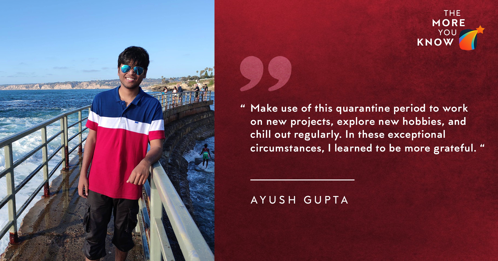

April 17, 2020
Hey everyone!
My blog would be slightly different from others since I did not prepare for internships
methodologically, but had worked in a specific field for a substantial time. This
article would surely tell you what you should definitely not do. I've tried to structure
this long article, and if you only want to read my advice and suggestions, please feel
free to scroll down and read the relevant portions.

I have linked my older resume here
but charted down some points for a quick outline.
- CPI: Slightly above 9.0 (anything above 8 passes for most companies)
- Department: Mechanical Engineering (I had no core projects and even
lesser interest in anything related to turbines or thermo)
- Position of Responsibility: Software Subsystem Lead, AUV-IITK (the title
itself is not significant, but the experience of handling pressure and managing
people can pay off in the interview)
- 2 robotics-related projects (apart from AUV) in my resume.
Now that you know where I stood at the end of two years, I'll try to elaborate on my
journey till that point, and how it developed my thought process towards the final. You
can skip this without losing context.
Journey before Internship Season:
At the outset, I'd say I always had an interest in programming even before joining the
college (No, this is not because of some fad after JEE). Like every excited first-year
student on campus, I attended a lot of the technical lectures of various clubs
(competitive coding, astronomy, robotics, aeromodelling) and got interested in robotics.
After the SnT Team recruitments, I got into Team Humanoid and worked there for a
semester. This, along with an Advanced Track project for ESC101, helped me get an intern
at the NYO (well, everyone who knew some basic programming got it). Along with that, I
switched my SnT team and worked on vision algorithms in Team AUV for the entire Summer.
I realized software development is not my cup of tea, and robotics was something I'd
enjoy in the future.
For the entire second year, I continued working in the team, took part in two
competitions (one in January 2019 and the other in August 2019), and subsequently became
a subteam head (equivalent to a coordinator). I sacrificed my academics and other
projects due to the pressure from these events. As the semesters progressed, I got
interested in machine learning (I had been trying to avoid it, but got on board the hype
train anyway). Subsequently, I worked on some computer vision algorithms in my fourth
semester. I managed to get two projects under institute labs to explore some theoretical
aspects of robotics and absolutely loved it.
These projects/interns allowed me to become extremely efficient at time management and
the importance of prioritizing things in your life. After some particularly busy
deadlines, you wonder, can anything ever be harder than that? (Trust me, it can always
get harder if you choose to).
I took up MSO201 in the Summer semester and got a terrible grade there. I was busy
testing the bot at the swimming pool for 6-7 hours just the day before the exam and
spent the rest of the day watching the World Cup final in CCD (who lowers his CPI by 0.2
in Summers before his intern applications? ME).
Days leading to the storm:
I never thought much about internships in the second-year summers, due to my team
commitments (please avoid this, and make a plan about tackling the intern season). I had
convinced myself that SPO interns were my backup, and I'd surely go for an intern in
robotics.
With a lot of procrastination involved, I prepared a mediocre resume without any proper
review from seniors. Please avoid this, make your resume well in-time, and get it
reviewed from seniors for errors). I could not attend any mock group-discussion session
due to time constraints (needless to say, please do that). In fact, I was out of campus
till the night of 6th August due to the competition.
I applied for multiple companies, was shortlisted for many, but only had one interview
on Day 1. Deutsche Bank, Nutanix, Goldman Sachs did not shortlist me for the interviews,
owing to some mix of poor competitive coding skills, or my academic preference.
I was shortlisted for the GD stage for HUL and ITC. I did not want a backup working at
an FMCG factory, even with the perks (don't do this without adequately consulting your
seniors about the options). With no GD preparation, I was confused when I was in a
conference room with ten people shouting the same content differently. Nomura (came on
the second day) also conducted a GD, and even though I improved this time, I was not
called for an interview.
CapitalOne took a simple test based on mental aptitude, and everyone who solved more
questions than a particular threshold was selected. My interview took place at 7:15 AM
in the morning, and the interviewers arrived after us at the tutorial block. The
interview lasted for five minutes, and they judged our capability based on two profit
and loss questions. I was without an intern as Day 1 closed (also, with Day 2).
JP Morgan & Chase's process:
I read some essential topics in Data Structures and Algorithms for the coding tests for
all firms. Practiced some standard questions given on Geeks For Geeks, and The Interview
Bit - mostly related to linked lists, dynamic programming, and BFS/DFS. I only knew the
underlying algorithms but was confident of solving them correctly.
After the tests were over, I went through a lot of quantitative aptitude questions, from
books like:
- Fifty Challenging Problems in Probability, Frederick Mosteller
- A Practical Guide to Quantitative Finance Interviews, Xinfeng Zhou
I also practiced the puzzles which I could not solve during the coding tests or were
being asked in the interviews of other companies.
In the interview, there were four rejection rounds for each candidate focussing on
different things.
Probability: Standard puzzles were asked, which were modified versions of
questions given in these books. Even though the questions asked were from probability,
they were not related to MSO201 a lot. They could be solved by what we had learned till
JEE. There were some questions from Statistics based on p-value & hypothesis testing.
Linear Algebra: The linear algebra part was from MTH102, they asked about vector
spaces, eigenvalues, Gauss Elimination, Null Space, Rank of a matrix, QR decomposition,
Newton Raphson (some part was from numerical solutions)
Competitive Coding: A question on Binary Search Tree (they told me what is a
BST, and I had to implement it according to the problem), and one on Stacks. They asked
to write codes for the problems, along with some questions about time complexity, and
recursion.
Object-Oriented Languages: I was asked about C++ and Python. Basic definitions
of polymorphism, abstraction, constructor, destructor, override functions vs.
overloading functions were asked in C++. For python, they asked about lists,
dictionaries, and some basic syntax.
The questions were simple, but a lot of different topics were covered. Hence, speed and
accuracy were the main factors. They could not focus much on my resume, because they did
not have it (it got mixed up with another Ayush Gupta).
They had a final HR interview overcall, which was very straight forward. This experience
would not generalize to other profiles, I think JPMC took a very technical interview
compared to others.
Advice for people aiming at Quant profiles:
You have to be good at programming and mathematics. The tests, as well as the
interviews, had a lot of questions, and they expected you to be accurate and fast. Go
through the problems in the books I've recommended above. Make sure you have a strong
grip on any mathematical topic you write on your resume. There are a lot of resources on
the internet related to quantitative interviews.
Research Internships:
After relaxing for a few days and getting back on track with academics, I started
mailing professors in Germany. I was aiming for the DAAD-WISE scholarships (even though
my CPI was low, I was hoping that an above-par research experience would help me out). I
was not apping in this time since I had overloaded the semester to 64 credits, and could
barely get time to manage AUV and academics (manage your credits properly, do not
overload your busy semesters). When I finally faced rejection in both MITACS and DAAD,
by January, I started apping to various professors. After the extremely tiring process,
I managed to get some interviews but was asked to join for extended projects as a
Semester Exchange student. (Mech Dept. laughs in background). Fears about COVID-19
turning into a pandemic had already grown by then, and I settled for a summer at the
JPMC office (which turned into work from home?)
Advice for targeting the Interns:
- Make sure you spend your Summers before the Internships wisely and have at least
some projects on your resume that shows that you can deliver results. This would
help you cross the criteria for resume shortlist. A decent CPI is a plus point
definitely.
- Considering the skewed distribution for profiles, my practical advice would be
to practice some competitive coding (start early if you're really
underconfident). The questions asked are not really tough, but you need to have
the practice to solve them in a timed-test. Apart from this, know your resume
inside out. Don't really write anything if you are not confident about it, as it
can go against you at the interview.
- Try to solve as many puzzles as you can find. They would help you either in
interviews, or quant tests of GS/JPMC/others. Brainstellar, Gurmeet's blog are
perfect places to start.
- Practice group discussions with your friends and learn how to crack it (the last
two weeks are suitable for this). Franky, it does not depend on your points, but
your ability to communicate your point towards others as loudly as possible.
- Be patient with the process. It revolves mostly around your hard work but is
also dependent on some luck. (Don't compare yourself with others)
- Talk to seniors and learn about their experiences. Most of them are free in this
period and would love to help out someone willing to listen. Get an idea about
which companies come and what they look for. Play to your strengths, and make a
proper timeline to improve on your weaknesses.
- If you're not confident about your chances at the internships, don't be choosy
about which companies you apply to. Apply to every company which is open for
you, and make sure you have resumes tailored to each category.
Conclusion:
I hope this would help clear some of your doubts regarding the process and make you
aware of what to avoid (just keep using your common sense). Make use of this quarantine
period to work on new projects, explore new hobbies, and chilling out regularly. In
these exceptional circumstances, I learned to be more grateful and certainly realized
internshi[ss are a really small part of life. Feel free to message me if you need any
clarifications, or want to discuss something interesting.
- Ayush Gupta